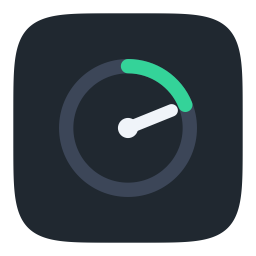

Horometer
Time tracking for client work and billing, on iPhone and in your Mac's menu bar.
Getting started
Tap or click New Project, give it a name and a client, and press ▶︎ to start the timer. You can create more projects any time with the + next to "Projects".
Syncing between iPhone and Mac
- Both devices must be signed in to the same iCloud account.
- Check Settings → iCloud in Horometer. It should say Syncing with iCloud.
- The first sync on a new device can take a few minutes. After that, changes usually appear within seconds to a minute.
- Only one timer runs at a time across your devices.
Billing and rounding
Billed time is rounded per project, per day, using the increment and method you choose in Settings. Reports show billed hours with the actual time underneath. Export CSV offers a Billing Summary (what to invoice) and an Entry Detail (every entry, with notes) whose actual hours add up to the summary's.
Changing an entry
On iPhone, open History and tap an entry; on Mac, select it in Entries and click Adjust. Changes are saved as corrections, so the original entry is always kept.
On Mac
- Horometer lives in the menu bar (⏱). Click it to open; click anywhere else to close.
- Right-click ⏱ for Settings, About and Quit.
- Turn on Open Horometer when you log in in Settings → Startup.
About the name
A horometer is an hour meter: the small gauge on an engine, generator, tractor or aircraft that counts the hours the machine has actually been running. Not calendar time, only working time. Those hours are what decide when maintenance is due and what a piece of rented equipment costs, so the meter is the record everyone trusts. In aviation it's often called a Hobbs meter, after a well-known maker.
The word comes from the Greek hōra, "hour", and metron, "measure", the same roots as horology, the study of timekeeping. In Spanish an hour meter is simply an horómetro.
Horometer does the same job for your work: it counts the hours that were really worked, keeps an honest record of them (changes are added as corrections, never by rewriting history), and turns them into time you can bill.
Privacy
Horometer collects no data about you. Read the privacy policy.